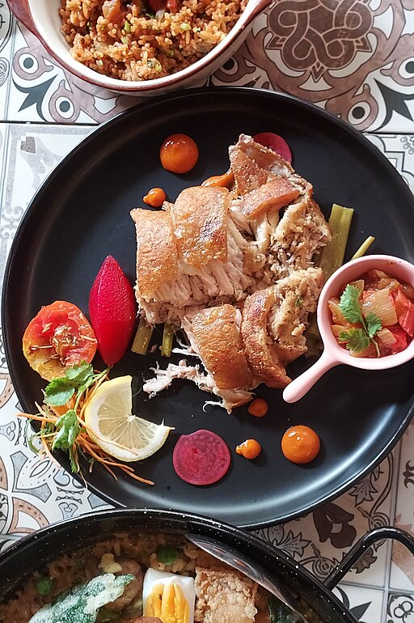

Odin Recipes
Bagnet

Description
Bagnet is a deep fried crispy pork belly dish that is similar to lechon kawali. It originated from Ilocos and is considered to be a top favorite among Filipinos.
Ingredients
- 2 lbs whole pork belly
- 1 medium red onion
- 1 tbsp whole black peppercorn
- 1 1/2 tbsp salt
- 6 cloves crushed garlic
- 4 to 6 cups water
- 3 cups cooking oil
Steps
- Arrange the pork belly in a wide and deep cooking pot. Pour-in the water. Make sure that the pork belly is fully submerged in water. Let boil.
- Once the water starts to boil, add the garlic, onion, 1 tablespoon salt, and whole black peppercorn. Simmer for 30 to 40 minutes.
- Remove the boiled pork belly from the cooking pot and place in a plate. Let it cool to room temperature.
- Rub the remaining 1/2 tablespoon of salt all over the boiled pork belly. Let it stay for 10 to 20 minutes.
- Heat the cooking oil in a deep cooking pot. When the oil gets hot, gently put in the pork belly and deep fry in medium heat until the pork belly turns golden brown and the texture gets crispy.
- Once the pork belly is golden brown and crispy, remove it from the cooking pot and arrange in a plate lined with paper towel. Turn the stove off and let the pork belly cool down to room temperature.
- When the pork belly cools down, heat up the oil one more time. Deep fry the same pork belly for the second time in medium heat for 5 to 10 minutes or until it gets extra crispy.
- Remove from the cooking pot and place in a plate lined with paper towel. Let the towel absorb the excess oil.
- Slice the pork bagnet into serving pieces and serve with your favorite sauce!
- Share and enjoy!
Home